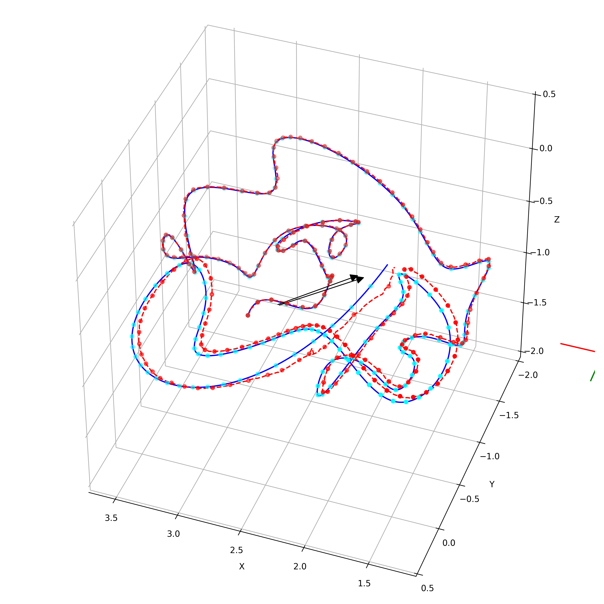
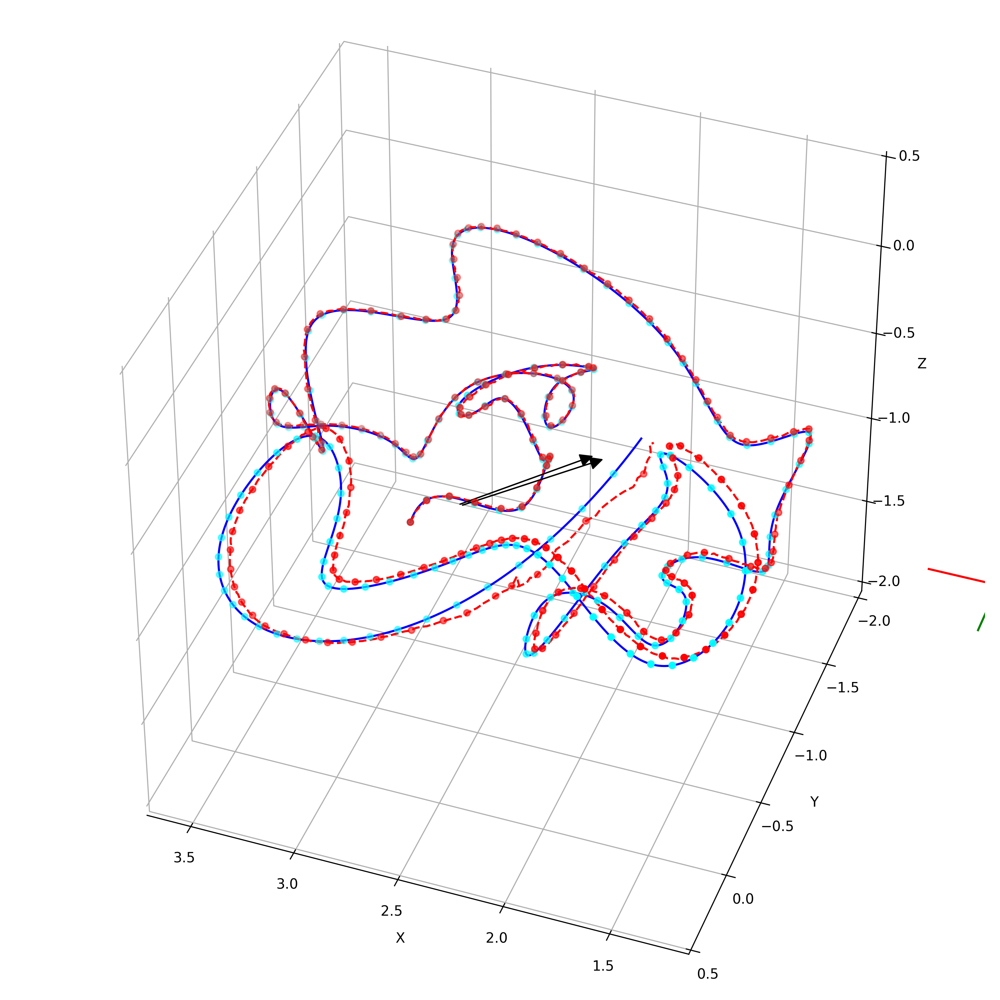
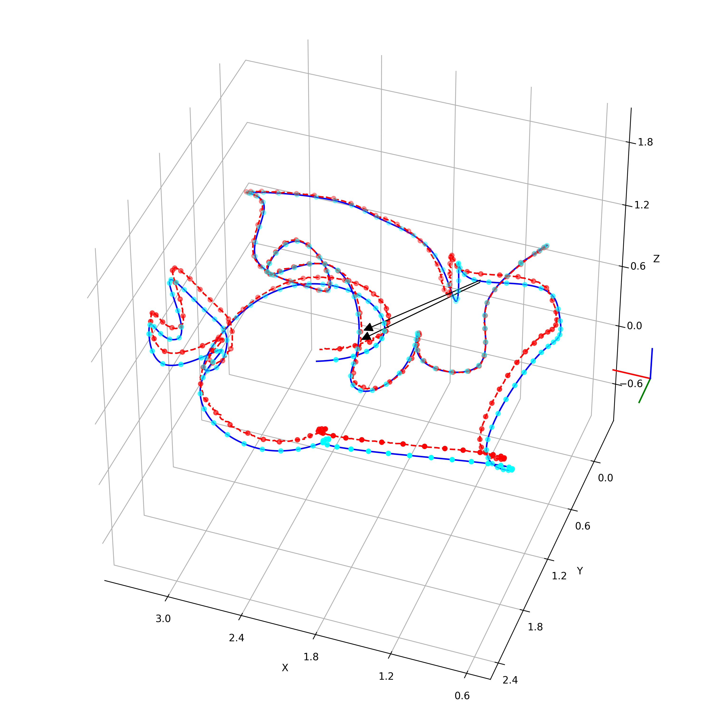
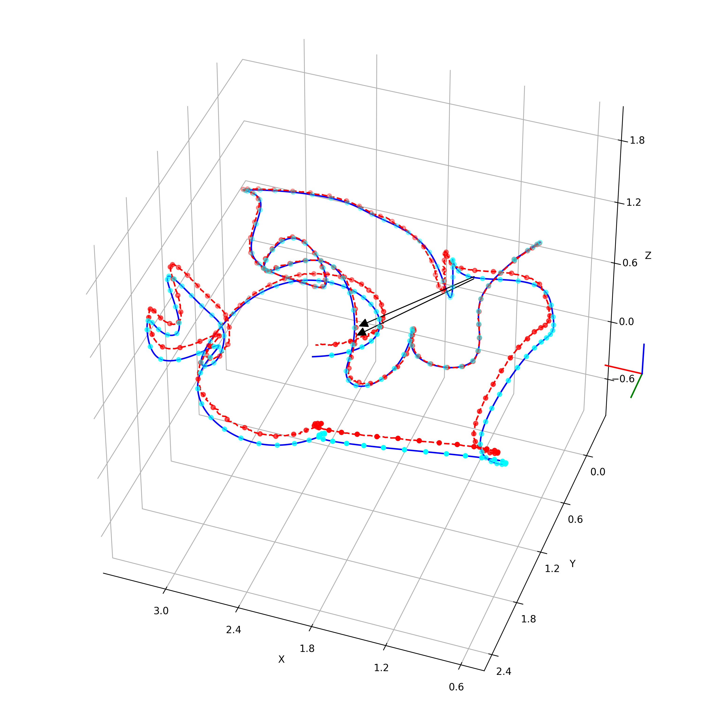

3D Scene Reconstruction from Long-Term Video via Visual Geometry Grounding Transformer and Generalized ICP
Reconstructing a 3D environment from video data is a computationally intensive and time-consuming process. To address this challenge, we propose a streamlined reconstruction pipeline that integrates the Visual Geometry Grounded Transformer (VGGT) with the Generalized Iterative Closest Point (G-ICP) algorithm.
The VGGT is a transformer-based architecture designed to infer 3D scene geometry and camera poses directly from video frames. By leveraging attention mechanisms, it learns spatial and temporal relationships across multiple views, enabling efficient estimation of depth, camera poses, and dense 3D structure without explicit feature matching.
However, the camera pose estimates produced by VGGT often exhibit inaccuracies, particularly in long-term or dynamic sequences. To refine these estimates, we incorporate G-ICP, which computes the optimal transformation matrix aligning each newly reconstructed sub-point cloud with the previously accumulated world point cloud. This correction step ensures global consistency and enhances the overall reconstruction accuracy.
Using the proposed pipeline, the reconstructed scenes achieved an average completion ratio of 85.58% (maximum: 91.69%, minimum: 75.27%) and an Absolute Trajectory Error (ATE) of 0.069 m on average (maximum: 0.158 m, minimum: 0.0284 m) across eight scenes from the Replica Dataset.

Ground truth (blue), first sub-pointcloud (Red), second sub-pointcloud (Green), we can clearly see that the camera pose estimation for the second sub-pointcloud from VGGT is inaccurate.
The reconstructed 3D scenes exhibit strong alignment with the ground truth. While minor discrepancies are observed in smaller elements such as decorations and chairs, the structural components—such as walls and other large objects—are reconstructed with high accuracy and spatial consistency.
 

 

The camera poses refined using G-ICP demonstrate strong alignment with the ground truth. In the visualization, the blue trajectory represents the ground truth camera poses, while the red trajectory corresponds to the results produced by our reconstruction pipeline.
A Lightweight Semantic Head Leveraging DINOv2 for Feature Embedding Extraction
When constructing a 3D environment, it is often desirable not only to reconstruct the RGB scene but also to understand the semantics of the environment. Semantic understanding enables an agent operating within the scene to recognize and reason about different objects, particularly identifying which objects are interactable. This additional layer of understanding allows the agent to perform more complex, goal-driven tasks based on user instructions.
DINOv2 is a state-of-the-art self-supervised visual representation model developed by Meta AI, designed to learn robust and general-purpose image embeddings without requiring labeled data. Trained on large-scale visual datasets, DINOv2 produces rich, semantically meaningful feature representations that capture both global structure and fine-grained object details. These embeddings serve as a strong foundation for downstream tasks such as semantic segmentation, object recognition, and scene understanding, making DINOv2 well-suited for enhancing semantic perception in 3D reconstruction pipelines.
Although VGGT is primarily designed for RGB-based 3D scene reconstruction, VGGT employs DINOv2 as its visual backbone. We can leverage this property to extend VGGT beyond geometry reconstruction. By utilizing the DINOv2 feature representations embedded within VGGT, our approach enables the generation of semantic 3D environments directly from RGB input. This integration allows the system to infer object categories and spatial relationships within the scene, thereby enhancing environmental understanding and supporting downstream tasks such as interaction, navigation, and goal-driven decision-making.
From objects such as the trash bin, sofa, light switch, TV, plant, and chair, it is evident that the semantic head accurately identifies and segments diverse categories within the scene. The predicted semantic maps achieve a mean Intersection over Union (mIoU) of 0.9 across 2,000 different views, while the output resolution is enhanced by a factor of 4 compared to the baseline configuration.
High-resolution semantic predictions generated by the modified semantic head, which is adapted to produce outputs at higher spatial resolution.
Original semantic predictions generated by the semantic head at low resolution.
Ground truth
Focus area on chair, from left to right, high-resolution, predicted, and ground truth.
Focus area on plant, from left to right, high-resolution, predicted, and ground truth.
Focus area on trash bin, from left to right, high-resolution, predicted, and ground truth.
Focus area on switch, from left to right, high-resolution, predicted, and ground truth.